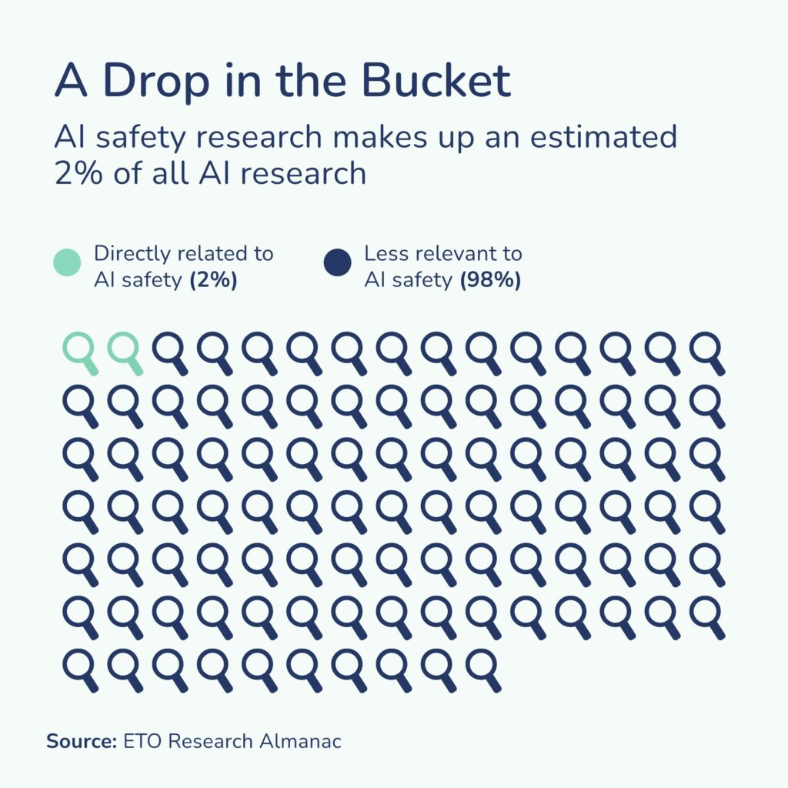

Underneath the umbrella of "responsible AI" sit two large, well-established research areas which agree on the risks of careless investment in AI capabilities and seemingly little else.
These two fields—"AI safety" and "AI ethics"—could together form a critical mass for confronting runaway AI adoption but remain separated by divergent motivations and rhetorical frames. This schism is deeply unstrategic in a world where safety constitutes 3% of all research activity with a similar proportion for ethics. Today, we see myriad incidents of social bias, security vulnerability, misaligned behavior or human disempowerment caused by frontier models. These front-page news items draw public outrage, but often go unharnessed by disunited experts. Part of the problem comes from selective attention displayed by leaders in ethics or safety who disagree on the severity or implications of any given incident.

Building a "big tent" can help bridge this gap and direct public attention towards tractable guardrails. Some motivations:
- Critical Mass: in the status quo, it appears that collective social pressure is a proximate path to meaningful restraints on capabilities-at-all-cost development. We need the complementary skills, diversity of audiences and raw numbers from those in "ethics" and "safety" to effectuate this pressure.
- Regulatory Consistency: existing regulatory artifacts, guided by voices from one or the other community, show divergent priorities for what constitutes "high-risk" in deployments. As this becomes codified in hard law, so too will discordant definitions of "alignment".
- Methodological Convergence: there are redundant bodies of research happening in parallel between communities which cross-collaboration could streamline, accelerate, and make normatively robust to critiques which impede the credibility of both fields.
I will not enumerate my thoughts on these points in this post, as it has gotten quite long as is. Instead, this post serves as my impression of both of these communities having interfaced with them extensively. I'll defer my more interpretive takes to a later post.
This serves a call to integrate the two fields. Common goals, technical tools, and semantics for "responsible AI"1 enable a critical mass that draws from the strengths of "ethics" and "safety" researchers while ensuring that we say the same words when we mean the same things. This is not to say that these fields should abandon their roots and original goals. The intellectual traditions and founding principles are the lifeblood for either community, and should be respected and preserved. But we should, at the very least, build a common lexicon, borrow each other's methods, converge on some baseline principles, and generally make a concerted effort to unite our fractured audiences.
I will roughly sketch impressions of "AI safety", "AI ethics", and the gap between them; for a more careful treatment, check out our survey and network study. The bulk of this post will (i) show that these fields are not so different; (ii) justify why we need to work together, and; (iii) describe ways you can change the status quo.
a quick disclaimer
- Frontier labs are not the cause of such a split. It goes without saying that these groups produce or sponsor some of the most impactful and precise research in both areas.
- The gap isn't personal. Arguments below suggesting what made AI ethics and safety so distinct from one another should not be taken as comments on individual research. Network effects are structural, and do not make assumptions on the preferences of individuals subject to those effects.
(i) two fields, a chasm, and a narrow bridge.
(1) a sketch of ai safety
The AI Safety paradigm begins, in large part, with the work of existential risk mitigation and effective altruism. In particular, Superintelligence by Nick Bostrom articulates many possible paths to catastrophic risks from superintelligence, stemming from some combination of loss of control, misuse from human actors, or value-misaligned intelligence. The task of "superalignment", then, requires finding mechanisms which guide an unforeseen superintelligent system in line with human values.
While this task appears intractable, existential risk reduction suggests that even incremental efforts at superalignment yield such high expected utility that they justify immediate, urgent action.
This framework of altruistic ends creates an interest convergence with many experts in machine learning, mathematics and software. For one, existential AI risk implicitly reinforces the legitimacy of these experts by suggesting that they might invent and train a superintelligent system2.
For another, AI safety endows technical progress with moral authority where it is otherwise associated with anti-social goals like financial success, power or status. In turn, alignment is bidirectional in its faith in technical progress -- "getting it right" would endow humanity with radical transformations in well-being, prosperity, and social stability.
It comes as no surprise, then, that a significant portion of the modern AI safety community has consolidated around adopting technical approaches3 to monitor, attribute, and unlearn the potentially detrimental behaviors of modern foundation models (especially LLMs).
It is important to note that AI Safety is heavily interlinked with "AI Security", which concerns technical machine learning research on subjects like user privacy, jailbreaking, agentic security, and other non-existential risks.
(2) a sketch of ai ethics
In contrast against the relatively canonicalized history of AI Safety, there exists an older, more decentralized body of work which also contends with the harms of artificial intelligence.
At the intersection of fields such as sociology, science and technology studies (STS)4, human-computer interaction and social choice theory, AI Ethics addresses present-day risks of artificial intelligence. These risks include the extrapolation of existing inequalities from data, the exploitative and exclusionary practices of developers, and especially real-world settings where minoritized groups are denied opportunity, surveilled, or targeted using AI.
What the future looks like matters less here. These dangers are already visible and urgent, regardless of future capabilities. If anything, concrete domain adoption -- not theory or speculation -- is the relevant scaling law.
Ethical failures in AI often demand societal -- not exclusively technical -- solutions. While AI Ethics has produced a substantial body of research on methods for algorithmic fairness and transparency, many would contend that such solutions face resistance in adoption, especially if they trade off with commercial goals. Many in AI Ethics see "technosolutionism" itself as a cultural device which obscures accountability for major stakeholders.
Instead, progress is made by securing governance of private and public institutions, releasing system-wide audits, conducting field research on AI laborers or "users" (who are the "users" of an algorithm which allocates affordable housing or police presence?), or rebalancing objectives in a deployed algorithm.
Some (certainly not all) important figures in AI Ethics: Timnit Gebru (founder of the Distributed AI Research Institute), Joy Buolamwini (founder of the Algorithmic Justice League), Sasha Luccioni, Maarten Sap, Margaret Mitchell, Ruha Benjamin.
The principles of AI Ethics are often summarized with the acronym FATE: Fairness, Accountability, Transparency and Explainability.
(3) the gap in between
The lion's share of overall research on "responsible AI" can be found within one of these two camps. It's not obvious why these groups struggle to collaborate.
In principle, research on mechanistic interpretability is the direct counterpart of Explainability in FATE, enabling us to localize bias in language models. Furthermore, bias against social groups is generally considered a misaligned behavior which Safety researchers often target in their work.
In the other direction, regulatory expertise is a necessity to implement protocols for responsible scaling, while field studies ground capability forecasts in realistic, user-facing contexts. Both fields have much to offer one another in methodology!
That said, AI Ethics and Safety feel orthogonal to one another. AI Safety proposes algorithmic methods to interpret, steer and contain superintelligent systems; AI Ethics proposes social interventions and audits of harms from today's systems.
Crucially, they are worried about different things. You might think "great, let these groups do their own thing and maybe sometimes share resources/people/ideas". I think this too! But the philosophies compete by definition. Threat models imply triage, as they justify which risks are worth rectifying (and, by omission, which are not).
At a conceptual level, the threshold is not "are these techniques interoperable", but "if the whole world agrees with my risk model, could we accommodate their risks?"
It seems like both groups have agreed upon mutual exclusivity. Why?
(a) look outside! (safety ⟹ ethics)
Obviously, progress on generative models has been and will continue to be a fundamental force transforming our economy, society, and nearly all aspects of life. It appears ever-more likely that humanity will either build a general intelligence which matches its greatest capabilities, possibly within the decade, with automated researchers potentially ushering in a super-intelligent system.
Early on, many researchers in AI Ethics underestimated the speed of progress. Many vocal critics dismissed the possibility of transformative capabilities as a scheme to foster greater investment in capital.
Such a dismissal appears fragile in retrospect, and it casts doubt on how those in AI Ethics plan to shape their philosophy if we do see transformative capabilities. The problems of tomorrow may not at all resemble the problems of today, including problems of distributive bias and exploitation. So why would these groups isolate distributive risks? There are, potentially, catastrophic outcomes from rapid development of artificial intelligence. These outcomes possess a non-trivial probability mass.
From that point of view, it would appear that addressing quotidian risk is... well... quotidian. Akin to burying one's head in the sand.
(b) the scoping argument (safety ⟹ ethics)
Concretely, AI Ethics research has a scoping problem. Principles like Fairness, Accountability, Transparency and Ethics are neverending challenges; there is no singular point at which these are possible to accomplish. How would you know once a system is ethical?
The field has taken a diagnostic bend, with an emphasis on documenting labor exploitation, risk reports, and audits. Due to the sociotechnical nature of this work, quantification and reproducibility become more difficult. These make improvements harder to scope, relative to safety.
(c) the distraction argument (ethics ⟹ safety)
Long-termist risk profiles place distributive harms on the backburner for as long as we can preserve human life and flourishing for some.
A utilitarian calculus suggests that any effort to remedy today's harms trades off with preparation for tomorrow's bigger threats. This argument is not new; it rehashes the Repugnant Conclusion critique of rationalism and before that the rationale of deontology.
Today's problems are already here, to be dealt with by the masses today, tomorrow and ten years out. Catastrophic risk will continue to loom over the future even while things "go well", sapping oxygen from distributive harms, especially if AI Safety advocates do not update their risk profiles when things "go well".
The result is a not-so-flourishing society which manages utopia for some but not for all. Many in AI Ethics argue that leaders in AI Safety would be ok with such a future (see TESCREALism below).
This trade-off argument is familiar to those field-building on university campuses, as discussion of "prosaic risk" is assumed to attract students otherwise repelled by existential risk.
(d) against singularity (ethics ⟹ safety)
AI Safety often assumes a "hard takeoff" leading up to a point of "Singularity"5. Depending on the success of our alignment and control efforts up to this hard takeoff, the hard takeoff will either be messianic or apocalyptic in nature.
Those in AI Ethics reject this all-or-nothing framing. They foresee a "hard takeoff" contingent on a series of intermediate decisions which happen over a longer timeframe. Even after a hard takeoff, there's no reason that a higher intelligence trained from human data and biases would naturally shed those behaviors. There is no "Judgement Day" to prepare for, so to speak.
(ii) the schism
These tensions are more than conceptual. They have played out over the past years, culminating in homophilous social networks in research, high-profile clashes online, and funding choices. The result is the deeply fragmented ecosystem we live in, where neither group carries the staying power to influence the forces that be.
(1) the tescreal bundle
Timnit Gebru has this idea of "TESCREAL bundle": Transhumanism, E?, Rationalism, Effective Altruism, Longtermism. This work argues that accelerationism and existential safety mutually reinforce one another: the concepts are mutually compatible, leaders run in the same circles and share power, and that existential risk is a "luxury problem" which not only marginalizes minoritized groups but systematically ignores their contributions to conversations on safety. On the last point, Gebru forwards the "distraction argument" as evidence of the eugenicist roots of AI Safety.
My take, if you care:
1) The utopia espoused by AI Safety advocates is rosy; the assumption that the future is either annihilation or total flourishing makes sense only to someone who has never faced systemic adversity on the basis of their socioeconomic status. In light of critical wealth gaps and other externalities of unchecked capitalism, I can't see the path from today's maddening wealth gaps and neglected social externalities to tomorrow's universal, equitable "flourishing". Maybe for the lucky few with Anthropic secondaries? Enlighten me.
2) AI Safety communities really struggle to acknowledge their diversity crisis, prompting questions of what "alignment" looks like with such drastic underrepresentation (indeed, it's worse than the general software industry, AI research, and other fields that struggle with diversity). This is an issue not just with AI Safety's fieldbuilding protocols, but with the values and assumptions of its leading voices.
3) AI Safety advocates do not, in fact, hold the power which Gebru ascribes to them. They are frequently branded as Luddites in politics and public discourse and shut out from venture investment. The bulk of funding in safety research circulates internally, and technical safety researchers work tirelessly when they could easily accumulate capital elsewhere.
4) Describing AI safety as a front for accelerationism feels callous. This community is clearly not living off of technocapital: they are resisting it. The TESCREAL bundle neglects the other side of the coin, where catastrophic risk becomes highly plausible and humanity struggles to curb misuse or align itself with the interests of superintelligent system. Technocrats dismiss this as fearmongering; we do not. How ignoble, self-righteous and self-serving.
Agree or disagree, one thing is for sure: this article remains an open wound for both communities.
(2) a fragmented research landscape
It is easy to see the implications of this schism when looking at the collaboration networks at AI research. In our paper, we use some standard metrics in network science to measure how these gaps look over the past five years (2020-2025) of collaboration data at NeurIPS, ICLR, AIES, SaTML, and your other usual suspects.
We found that papers on AI ethics rarely had common authors with papers on safety (83.1% homophily), which in the context of CS/AI research networks resembles two non-overlapping fields like computational biology and creative writing more than two generally related fields (i.e. NLP and machine learning). Clearly, safety/ethics are more than just "generally related!"
This suggests that there are indeed genuine clustering effects downstream of the social schism. Both fields grow their ideas in isolation with extremely low cross-collaboration.
Worse yet, safety-ethics connections are extremely tenuous. Nearly all shortest paths between these researchers passes through a little over 200 central nodes. Without these interdisciplinary few (leaders of large, non-specific labs like Yejin Choi or Jiawei Han), the top 1% of all authors would be completely cut off by discipline.
These places also have their own fora for sharing ideas. For AI Ethics, traditional academic venues like AIES, FAccT, and CHI serve as common ground; for AI Safety, digital ecosystems built over years like LessWrong are more legible venues. Earning "status" in one context does not transfer to the "status" of the other.
As we note in the paper:
The consequences of this fragmentation extend beyond academia into global policy, creating a fractured approach to governance where our most pressing risks are treated as competing priorities. Each community, operating in isolation, exports an incomplete vision of “alignment” to policymakers.
(3) the waning relevance of ai ethics?
One holistic thought is that since working on this network study in late 2025, safety has become a salient, kitchen table issue while questions of bias have been left behind. Some of this comes from the pre-commitments made by many prominent voices in AI Ethics, tying their beliefs to a denial of growth in capabilities. Despite this bet seeming far-fetched today, the questions posed by this community still ought to bear on risk calculi, as argued in this work.
-
One important question is what to call such a unified field. Open to feedback? ↩
-
In recent years, of course, this seems less far-fetched than ever. For more analysis on the feedback loop between existential AI safety and capability development, consider "The TESCREAL Bundle" by Timnit Gebru. ↩
-
This includes advocating for legislation which mandates the use of such tools, or managing operations at the many organizations which facilitate and upskill such talent. ↩
-
Science and technology studies understands technology as an object of study, using historical methods to situate development against societal background. ↩
-
To be precise, the Singularity is the point at which transhumanists say humanity will be integrated with artificial bionics, including but not limited to intelligence. ↩